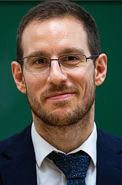

Alessio Figalli | |
|---|---|
 Figalli in 2019 | |
| Born | 2 April 1984 Rome, Italy |
| Alma mater | University of Pisa Scuola Normale Superiore di Pisa École normale supérieure de Lyon |
| Spouse | Mikaela Iacobelli |
| Awards | Peccot Lectures (2012) EMS Prize (2012) Stampacchia Medal (2015) Feltrinelli Prize (2017) Fields Medal (2018) |
| Scientific career | |
| Fields | Mathematics |
| Institutions | ETH Zurich University of Texas at Austin École Polytechnique University of Nice Sophia Antipolis |
| Thesis | Optimal transportation and action-minimizing measures (2007) |
| Luigi Ambrosio Cédric Villani | |
Doctoral students | |
.jpg){kind=link}
Alessio Figalli (Italian: [aˈlɛssjo fiˈɡalli]; born 2 April 1984) is an Italian mathematician working primarily on the calculus of variations and partial differential equations.
He was awarded the Peccot-Vimont Prize and the Peccot Lectures in 2012, the EMS Prize in 2012,[1] the Stampacchia Medal in 2015,[2] the Feltrinelli Prize in 2017, and the Fields Medal in 2018. He was an invited speaker at the International Congress of Mathematicians 2014.[3] In 2016 he was awarded a European Research Council (ERC) grant, and in 2018 he received the Doctorate Honoris Causa from the Université Côte d'Azur. In 2019, he received the Doctorate Honoris Causa from the Polytechnic University of Catalonia.
Biography
Figalli received his master's degree from the University of Pisa[4] in 2006 (as a student of the Scuola Normale Superiore di Pisa), and earned his doctorate in 2007 under the supervision of Luigi Ambrosio at the Scuola Normale Superiore di Pisa and Cédric Villani at the École Normale Supérieure de Lyon. In 2007, he was appointed Chargé de recherche at the French National Centre for Scientific Research, and in 2008 he went to the École polytechnique as Professeur Hadamard.[5]
In 2009, he moved to the University of Texas at Austin as an associate professor. He became full professor in 2011, and R. L. Moore Chair holder in 2013. Since 2016, he is a chaired professor at ETH Zürich.[5]
Amongst his several recognitions, Figalli has won an EMS Prize in 2012, he has been awarded the Peccot-Vimont Prize 2011 and Cours Peccot 2012 of the Collège de France and has been appointed Nachdiplom Lecturer in 2014 at ETH Zürich.[6] He has won the 2015 edition of the Stampacchia Medal, and the 2017 edition of the Feltrinelli Prize for mathematics.
In 2018, he won the Fields Medal "for his contributions to the theory of optimal transport, and its application to partial differential equations, metric geometry, and probability".[7]
Work
Figalli has worked in the theory of optimal transport, with particular emphasis on the regularity theory of optimal transport maps and its connections to Monge–Ampère equations. Amongst the results he obtained in this direction, there stand out an important higher integrability property of the second derivatives of solutions to the Monge–Ampère equation[8] and a partial regularity result for Monge–Ampère type equations,[9] both proved together with Guido de Philippis. He used optimal transport techniques to get improved versions of the anisotropic isoperimetric inequality, and obtained several other important results on the stability of functional and geometric inequalities. In particular, together with Francesco Maggi and Aldo Pratelli, he proved a sharp quantitative version of the anisotropic isoperimetric inequality.[10]
Then, in a joint work with Eric Carlen, he addressed the stability analysis of some Gagliardo–Nirenberg and logarithmic Hardy–Littlewood–Sobolev inequalities to obtain a quantitative rate of convergence for the critical mass Keller–Segel equation.[11] He also worked on Hamilton–Jacobi equations and their connections to weak Kolmogorov–Arnold–Moser theory. In a paper with Gonzalo Contreras and Ludovic Rifford, he proved generic hyperbolicity of Aubry sets on compact surfaces.[12]
In addition, he has given several contributions to the Di Perna–Lions' theory, applying it both to the understanding of semiclassical limits of the Schrödinger equation with very rough potentials,[13] and to study the Lagrangian structure of weak solutions to the Vlasov–Poisson equation.[14] More recently, in collaboration with Alice Guionnet, he introduced and developed new transportation techniques in the topic of random matrices to prove universality results in several-matrix models.[15] Also, together with Joaquim Serra, he proved the De Giorgi's conjecture for boundary reaction terms in dimension lower than five, and he improved the classical results by Luis Caffarelli on the structure of singular points in the obstacle problem.[16]
Books
- Figalli, Alessio (2008). Optimal transportation and action-minimizing measures. Pisa: Edizioni della Normale. ISBN 978-88-7642-330-7. OCLC 775713078.
- Figalli, Alessio; Peral, Ireneo; Valdinoci, Enrico; Farina, Alberto; Valdinoci, Enrico (2018). Partial differential equations and geometric measure theory : Cetraro, Italy 2014. Cham. ISBN 978-3-319-74042-3. OCLC 1038015728.
{{cite book}}: CS1 maint: location missing publisher (link) - Figalli, Alessio (2017). The Monge-Ampère equation and its applications. Zürich. ISBN 978-3-03719-670-0. OCLC 966313232.
{{cite book}}: CS1 maint: location missing publisher (link)
References
- ^ "6th European Congress of Mathematics" (PDF). European mathematical Society. Retrieved 13 March 2013.
- ^ "2015 Stampacchia Medal winner citation" (PDF).
- ^ "ICM 2014". Archived from the original on 6 November 2014.
- ^ SISTEMA ETD - Archivio digitale delle tesi discusse presso l'Università di Pisa
- ^ a b "Alessio Figalli – Curriculum vitae" (PDF). Retrieved 16 January 2025.
- ^ "ETH Lectures in Mathematics".
- ^ A Traveler Who Finds Stability in the Natural World, August 1, 2018
- ^ Guido De Philippis; Alessio Figalli (2011). " regularity for solutions of the Monge–Ampère equation". Inventiones Mathematicae. 192 (1): 55–69. arXiv:1111.7207. Bibcode:2013InMat.192...55D. doi:10.1007/s00222-012-0405-4. S2CID 122492657.
- ^ Guido De Philippis; Alessio Figalli (2015). "Partial regularity for optimal transport maps". Publications Mathématiques de l'IHÉS. 121: 81–112. arXiv:1209.5640. doi:10.1007/s10240-014-0064-7. S2CID 189795461.
- ^ Alessio Figalli; Francesco Maggi; Aldo Pratelli (2010). "A mass transportation approach to quantitative isoperimetric inequalities". Inventiones Mathematicae. 182 (1): 167–211. Bibcode:2010InMat.182..167F. doi:10.1007/s00222-010-0261-z. S2CID 10571756.
- ^ Eric A. Carlen; Alessio Figalli (2013). "Stability for a GNS inequality and the Log-HLS inequality, with application to the critical mass Keller–Segel equation". Duke Mathematical Journal. 162 (3): 579–625. arXiv:1107.5976. doi:10.1215/00127094-2019931. S2CID 14652858.
- ^ Gonzalo Contreras; Alessio Figalli; Ludovic Rifford, L. (2015). "Generic hyperbolicity of Aubry sets on surfaces". Inventiones Mathematicae. 200 (1): 201–261. Bibcode:2015InMat.200..201C. doi:10.1007/s00222-014-0533-0. S2CID 16312398.
- ^ Luigi Ambrosio; Alessio Figalli; Gero Friesecke; et al. (2011). "Semiclassical limit of quantum dynamics with rough potentials and well-posedness of transport equations with measure initial data". Communications on Pure and Applied Mathematics. 64 (9): 1199–1242. arXiv:1006.5388. doi:10.1002/cpa.20371. S2CID 14331437.
- ^ Luigi Ambrosio; Maria Colombo; Alessio Figalli (2017). "On the Lagrangian structure of transport equations: The Vlasov–Poisson system". Duke Mathematical Journal. 166 (18): 3505–3568. arXiv:1412.3608. doi:10.1215/00127094-2017-0032. S2CID 16821952.
- ^ Alessio Figalli; Alice Guionnet (2016). "Universality in several-matrix models via approximate transport maps". Acta Mathematica. 217 (1): 81–176. arXiv:1407.2759. doi:10.1007/s11511-016-0142-4.
- ^ Alessio Figalli; Joaquim Serra (2019). "On the fine structure of the free boundary for the classical obstacle problem". Inventiones Mathematicae. 215 (1): 311–366. arXiv:1709.04002. Bibcode:2019InMat.215..311F. doi:10.1007/s00222-018-0827-8. S2CID 119693672.